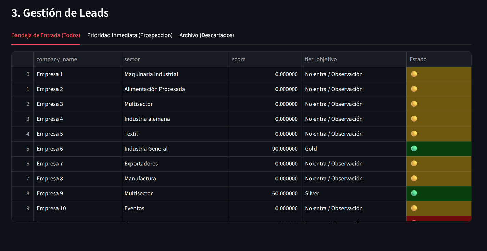

Lead Validation
Sistema "Semáforo" diseñado para la clasificación algorítmica de leads. Optimiza la prospección comercial basándose en datos objetivos, eliminando el sesgo humano en el embudo de ventas.

Smart Inventory
Gestión de inventario inteligente mediante integración de sensores IoT y cámaras de profundidad con tecnología YOLO. Visualización en tiempo real de métricas críticas para la toma de decisiones en logística.